请使用具有扩展功能的浏览器访问https://www.ewt360.com
[!IMPORTANT]
推荐使用电脑进行观看，手机请使用狐猴浏览器、edge浏览器进行观看
电脑用户请勿使用Internet Explorer和Safari浏览器
手机用户请勿使用未具有拓展功能的国产浏览器及Safari浏览器
[!TIP]
本教程以Microsoft Windows11 26H1安装的Edge浏览器为例，其他情况请自主判断
访问https://microsoftedge.microsoft.com/addons/Microsoft-Edge-Extensions-Home进入Microsoft Edge Add-ons
在右上角的搜索栏中键入Global Speed并回车，随后会出现相关结果（通常为第一个）
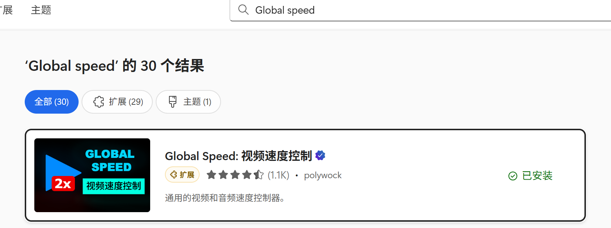
点击结果会跳转到详情页，请点击右上角的获取按钮进行安装，若浏览器弹出询问弹窗，请一律点允许
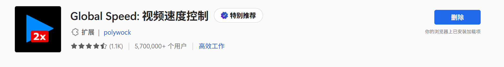
1. 访问https://www.ewt360.com
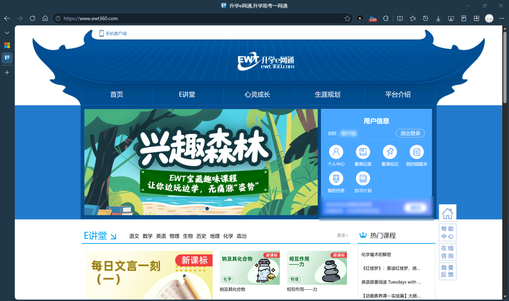
2. 点击我的任务，进入任务列表
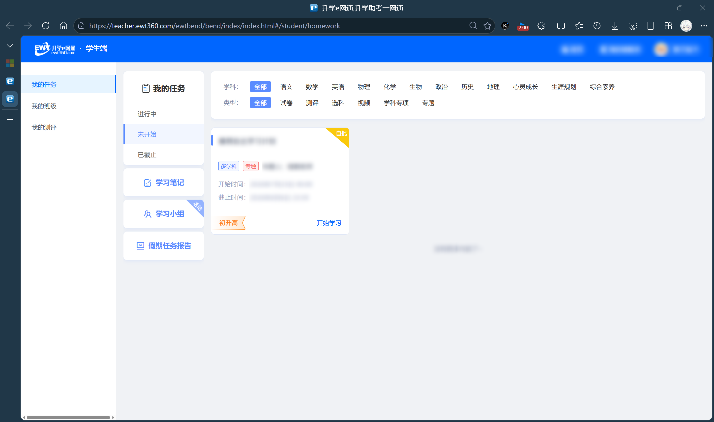
3. 选择你要刷的任务，进入课程选择页
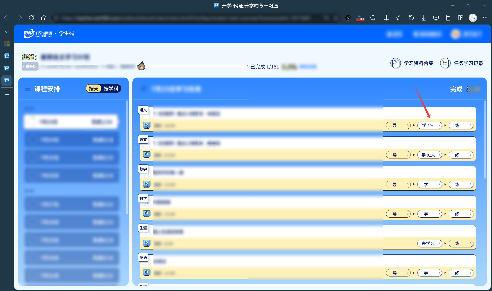
4. 点击学进入视频播放页
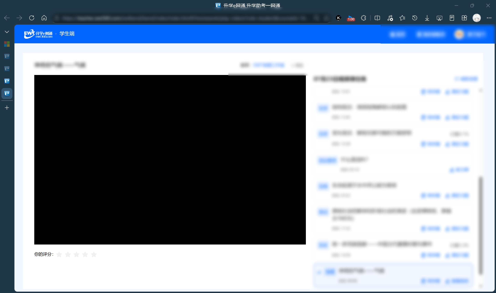
5. 点击右上角 三个点 展开二级菜单（本步骤可以省去，直接跳转至步骤7）
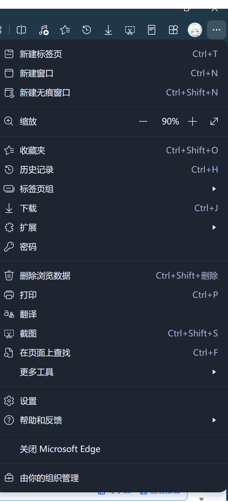
6. 点击扩展，展开菜单（本步骤可以省去，直接跳转至步骤7）
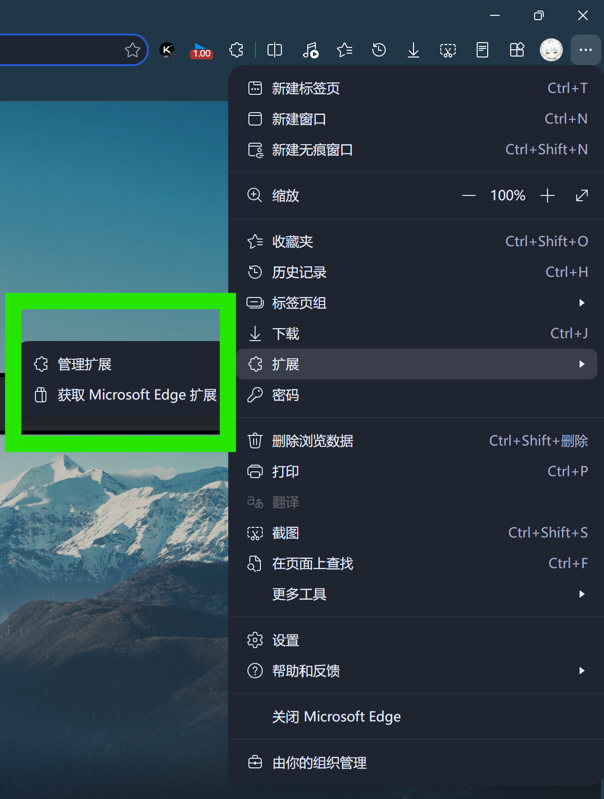
7. 点击管理扩展，打开管理，确认本插件为打开状态后回到视频播放页（本步骤可以省去，直接跳转至步骤7）
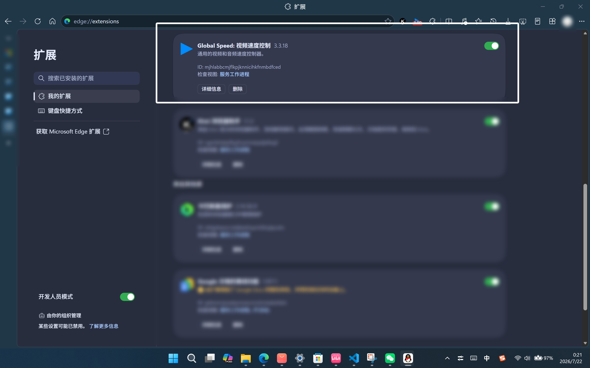
8. 点击右上角拼图图标，进入扩展列表
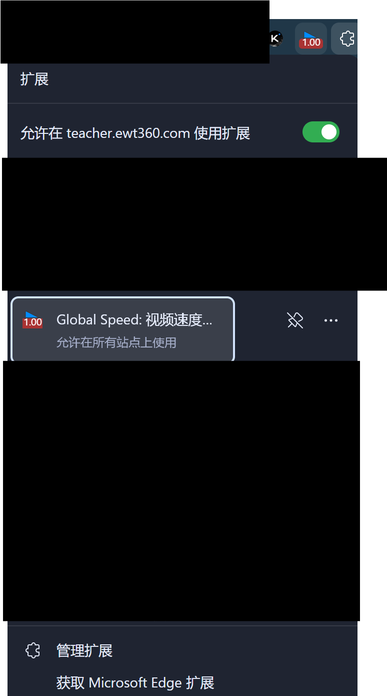
9. 点击Global Speed，弹出设置浮窗，选择你希望的倍数
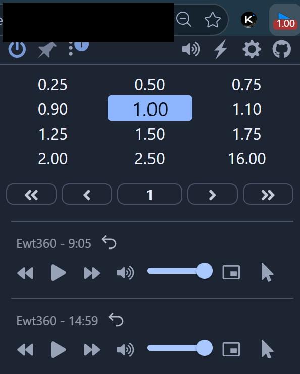
[!IMPORTANT]
请不要选择大于2x的速率，否则会禁止上课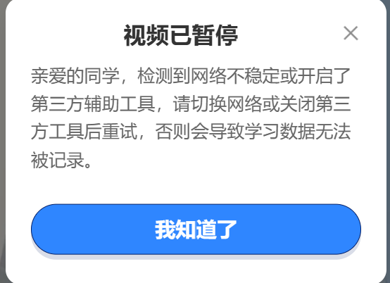
[!WARNING]
免责声明
1. 内容性质说明
本文《升学e网通刷网课可行性猜想》仅为技术原理探讨与理论猜想，全部内容仅供学习交流、技术研究使用，不构成任何实际操作建议，亦无教唆、诱导他人实施违规操作的意图。
2. 平台规则与合规风险
升学e网通（https://www.ewt360.com）的课程服务受平台《用户服务协议》、运营规则及《中华人民共和国著作权法》等相关法律法规约束。使用第三方插件加速播放、违规刷课等行为可能违反平台规则，存在账号封禁、学习记录作废、服务权限终止等风险，所有风险与法律后果均由实际操作者自行承担。
3. 第三方工具免责
文中提及的浏览器、Global Speed插件及相关第三方工具仅为技术示例，本文不对其安全性、稳定性、合规性及使用效果作出任何明示或默示的担保。因安装、使用上述第三方工具导致的设备故障、数据丢失、隐私泄露、账号异常等任何问题，本文作者不承担任何法律责任与赔偿责任。
4. 知识产权提示
平台内所有课程、图文、音频等内容均受知识产权保护，任何人不得通过违规手段批量获取、传播或用于非学习用途。因违规使用内容引发的侵权责任，由行为人自行全部承担。
5. 责任界定
任何基于本文内容实施的实际操作，均视为操作者自主判断、自主决策的行为。由此产生的一切直接、间接损失或法律后果，均由操作者自行承担，本文作者不承担任何责任。
6. 规则更新提示
若平台运营规则、相关法律法规发生更新或调整，以官方最新规则及现行有效法律规定为准。